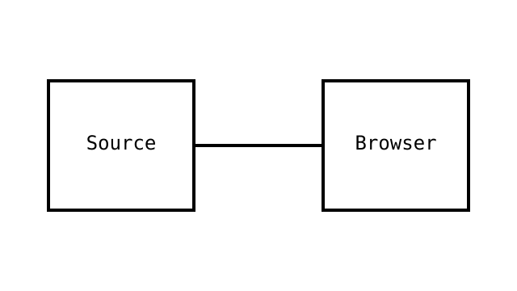

Library reference compositions
These are local examples for consumers. Submission, saved state and media sources belong to the application.
Forms and loading
Saving example: the application restores the button when its operation finishes.
Keep the same button label box width during loading. Native disabled prevents duplicate activation. Use aria-busy for the operation and a separate status region.
Native media

Local record search
Type to filter; Tab reaches matching links. Arrow Down moves to the first result.
Code and data
<link rel="stylesheet" href="./dist/sitekit.css">
<script src="./dist/sitekit.js" defer></script>| Surface | Owner |
|---|---|
| Submission | Application |
| Calendar | Optional SiteKit enhancement |